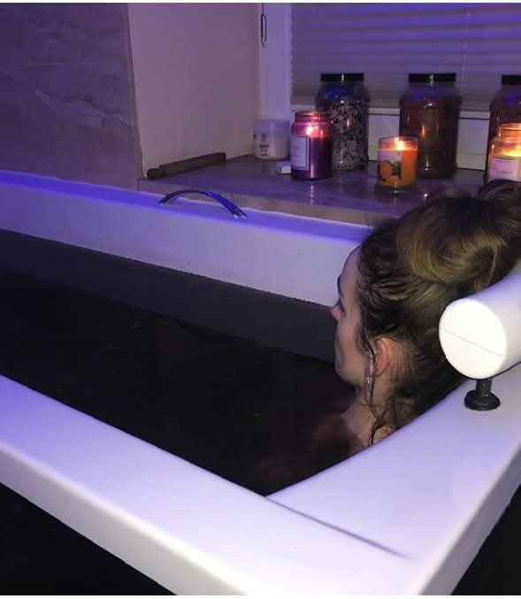
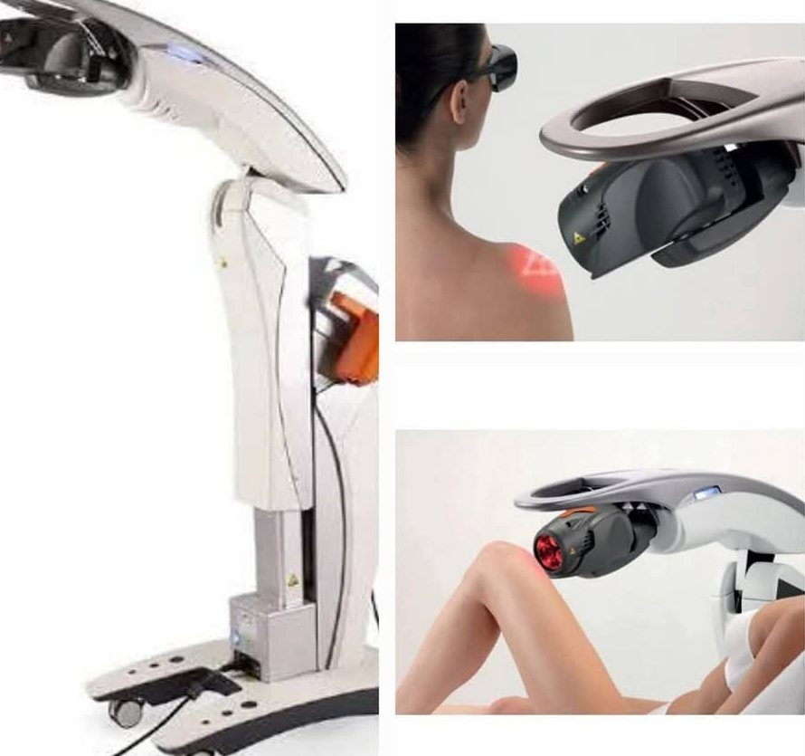

Rehabilitacja i fizykoterapia
Skuteczna praca z bólem, ograniczoną ruchomością i powrotem do sprawności po urazach.
- Laser wysokoenergetyczny
- Salus Talent — magnetoterapia 3 T
- Krioterapia miejscowa
- Elektroterapia, ultradźwięki, jonoforeza

Klinika Zdrowia i Urody w sercu uzdrowiska. Łączymy uznaną medycynę uzdrowiskową Buska-Zdroju — kąpiele siarczkowe, borowinę i nowoczesną fizykoterapię — z medycyną estetyczną i kosmetologią na najwyższym poziomie.

Busko-Zdrój to jedno z najbogatszych źródeł wód siarczkowych w Europie. My łączymy tę naturalną moc z precyzją współczesnej medycyny — w kameralnym ośrodku, który działa nieprzerwanie od 1991 roku i w którym nikt nie jest numerem w kolejce.
Od leczenia bólu kręgosłupa po zabiegi, które przywracają skórze świeżość. Każdy z tych obszarów prowadzą u nas osoby, które robią to na co dzień od lat.
Skuteczna praca z bólem, ograniczoną ruchomością i powrotem do sprawności po urazach.
To, po co przyjeżdża się do Buska: naturalne kąpiele lecznicze w komfortowych warunkach.
Zabiegi lekarskie wykonywane przez doświadczonego lekarza medycyny estetycznej.
Zaawansowane terapie twarzy i ciała — od kwasów po urządzenia najnowszej generacji.
Kompleksowa opieka nad zdrowiem stóp — tam, gdzie kosmetyka kończy się, a zaczyna terapia.
Rytuały, które robią z pobytu coś więcej niż leczenie. Ciało odpuszcza, głowa zwalnia.
Dziesięć pokoi w spokojnej, zdrojowej części miasta. Kilka minut spacerem dzieli Cię od Nowego Parku Zdrojowego i największej tężni solankowej w Polsce.
10 pokoi 1- i 2-osobowych z własną łazienką, TV i Wi-Fi — kilkanaście kroków od gabinetów zabiegowych.
Zobacz wyposażenie
Weekend regeneracyjny, turnus rehabilitacyjny albo pobyt seniorski — z wyżywieniem i serią zabiegów.
Wybierz pakiet
Laser wysokoenergetyczny, magnetoterapia 3 T, krioterapia, presoterapia i PST — wszystko na miejscu.
Zobacz sprzętDzwonisz lub piszesz. Ustalamy termin i mówimy wprost, czy możemy pomóc.
Pytamy o dolegliwości, przebyte zabiegi i leki. To warunek bezpiecznej terapii.
Dobieramy zabiegi i ich kolejność. Wiesz, ile potrwa seria i czego się spodziewać.
Realizujemy plan i korygujemy go na bieżąco. Po serii podpowiadamy, co robić w domu.
Kliknij zdjęcie, żeby je powiększyć.
Profesjonalna baza zabiegowa, mnóstwo zabiegów i cudowne masaże. Personel pomocny i naprawdę miły.
Śniadanie bardzo dobre i różnorodne. Czysto, spokojnie, blisko parku — dokładnie tego szukaliśmy.
Personel profesjonalny i uprzejmy. Zabiegi dobrane pod moje plecy, po tygodniu duża różnica.
Opinie na podstawie ocen Gości publikowanych w serwisach rezerwacyjnych.
Podpowiemy, który pakiet ma sens przy Twoich dolegliwościach, i sprawdzimy wolne terminy. Bez zobowiązań, bez skierowania.
{kind=link}
{kind=link}
{kind=link}
{kind=link}
{kind=link}